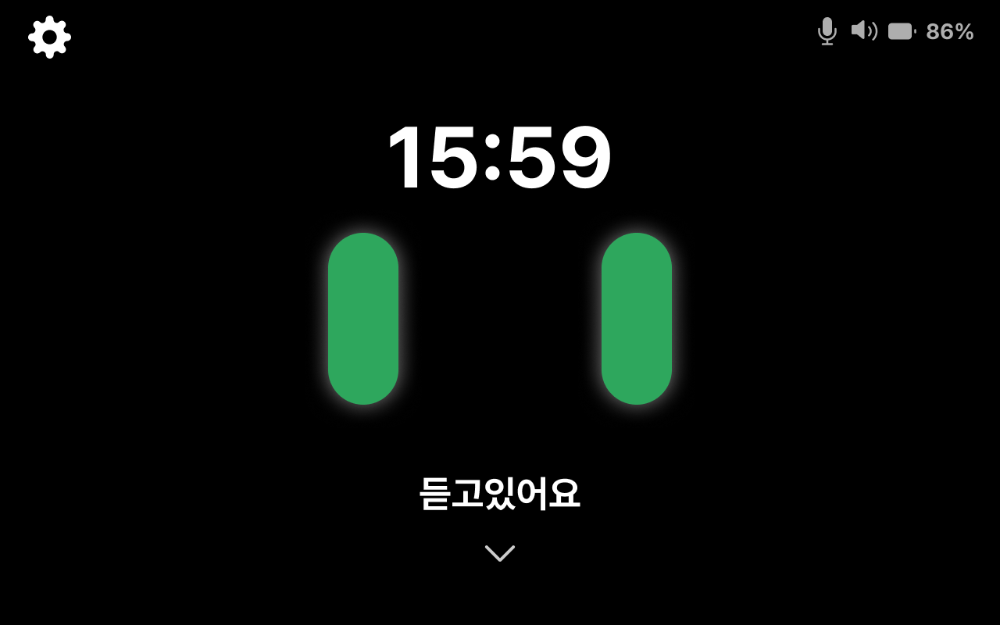
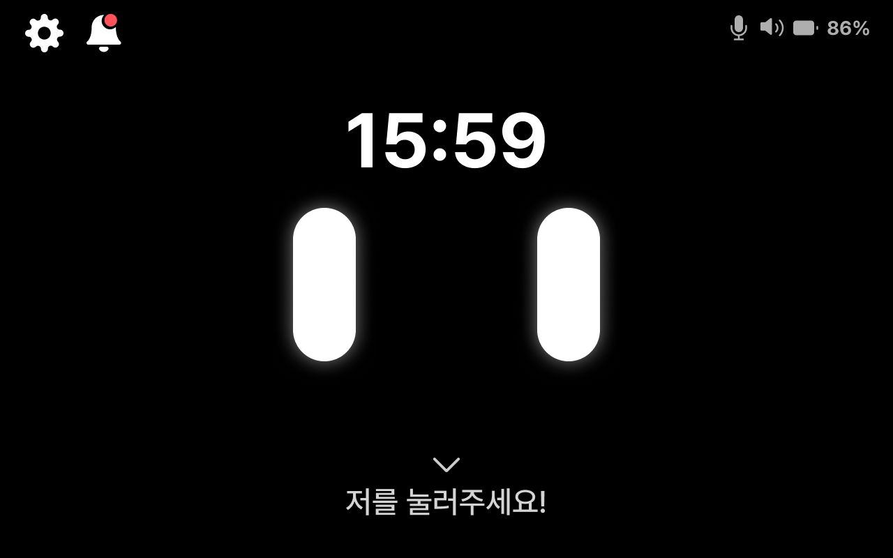

복잡한 서비스의 문제를 정의하고, 제품이 작동하는 기준까지 설계합니다.
시니어 돌봄 플랫폼 NovaCare에서 UX 전략과 서비스 정책을 설계하고, 팀이 정한 기준을 기능명세·UI로 구체화해 개발 협업·QA까지 제품의 완성도를 책임졌습니다.
대표 의사결정 3가지
터치에서 음성 대화로
PROBLEM
다단계 터치 조작이 고령 사용자에게 어려울 수 있다는 가설
DECISION
홈스테이션을 화면 조작 기기가 아닌 대화형 디바이스로 정의하고, 듣는 중 · 생각 중 · 말하는 중 상태 체계를 수립

케이스 스터디에서 보기 →02위험 알림 8종과 15초 확인
PROBLEM
알림 유형별 동작 기준과 대응 주체가 서로 달랐음
DECISION
알림 8종을 긴급도 3등급으로 분류하고, 119 신고 전 15초 확인·취소 단계를 설계 (위험 대응 기준은 팀 정책을 반영)
 케이스 스터디에서 보기 →03
케이스 스터디에서 보기 →03복약 설정을 단계형으로
PROBLEM
통합 입력에서 시간대가 헷갈리고 중복으로 들어갈 수 있었음
DECISION
입력 단계를 나누고 시간대별 설정 범위를 겹치지 않게 분리
 케이스 스터디에서 보기 →
케이스 스터디에서 보기 →대표 프로젝트

AI 시니어 돌봄 서비스
NovaCare
홈스테이션(1280×800), 보호자 앱, 관제센터가 연동되는 B2G 시니어 돌봄 플랫폼. 문제 정의부터 기능명세, UX 정책 설계, 개발 협업, QA까지 맡았다.
- 문제 정의
- 기능명세 / UX 정책 설계
- 개발 협업
- QA
디자인 전략 · UX Writing · 2026.01
NovaCare Design Strategy
“불안을 안심으로 바꾸는 기술”을 디자인 의도로 세우고, 이미지 톤 · 형태 · 아이콘 · 컬러 · 타이포그래피와 UX Writing 원칙을 하나의 가이드로 직접 작성했다.
- 비주얼 시스템
- 타이포그래피
- UX Writing
- 프로토타입 유형
웹사이트 · 서비스 소개
노바케어 서비스 소개 사이트
AI 시니어 통합돌봄 서비스를 소개하고 도입 문의로 연결하는 사이트. 비주얼·UI 디자인과 카피 작성을 맡았다.
- 랜딩 페이지
- 서비스 소개
- 도입 문의
- 비주얼·UI
- 카피
핵심 역량
문제 정의 & UX 전략
고령 사용자·보호자·기관이라는 서로 다른 이해관계자의 요구를 하나의 서비스 흐름으로 구조화.
서비스 정책 & 위험 알림 설계
긴급도·대응 주체 기준으로 위험 알림을 분류하고, 오신고를 막는 확인 절차를 정책 레벨에서 수립.
기능명세 & 의사결정 문서화
UX 정책을 기능명세서로 구체화하고, 이해관계자 간 의사결정 과정을 끝까지 추적.
디자인 시스템 운영
컴포넌트·간격·색상 기준을 정리해 화면 간 일관성을 유지.
크로스펑셔널 협업 & QA
UI 시안과 기능명세 간 불일치를 비교·도출하고 개발 조직과 함께 수정.
AI 보조 디자인/개발 워크플로우
Figma MCP와 Claude Code를 활용해 디자인 자료를 실제 코드와 포트폴리오로 직접 연결 — 이 사이트 자체가 그 결과물.
일하는 방식
모든 프로젝트는 같은 순서로 진행합니다 — 문제 정의부터 결과 확인까지, 추측이 아니라 확인 가능한 근거로 이어갑니다.
- 01
Problem
고령 사용자 시나리오와 이해관계자 요구 충돌을 정의
- 02
Constraints
디바이스 사양, B2G 운영 조건, 기존 정책과의 정합성
- 03
Hypothesis
터치 대신 대화형 인터랙션이 더 적합할 것이라는 가설
- 04
Decision
정책·화면구조·기능명세로 구체화하고 이해관계자와 합의
- 05
Validation
QA와 시나리오 검증, 기능명세–UI 불일치 비교
- 06
Outcome
확인된 변경을 기록하고, 수치는 측정 후 추가
NovaCare에서의 기여
전체 경력은 About에서 볼 수 있습니다. 여기에는 NovaCare 프로젝트에서 직접 확인 가능한 기여만 정리했습니다.
위험 알림 8종 정책 수립
긴급도·대응 주체 기준으로 알림을 분류하고, 119 신고 전 15초 확인·취소 절차를 설계
터치 → 음성 인터랙션 전환 설계
홈스테이션을 대화형 디바이스로 재정의하고, 듣는 중/생각 중/말하는 중 상태 체계를 수립
복약 설정 플로우 재설계
통합 입력 구조를 단계형으로 분리해 시간대 중복 선택 오류 가능성을 줄임
기능명세–UI 교차 검수 체계
UI 시안과 기능명세서 간 불일치를 비교해 수정 항목을 도출하는 QA 프로세스 운영